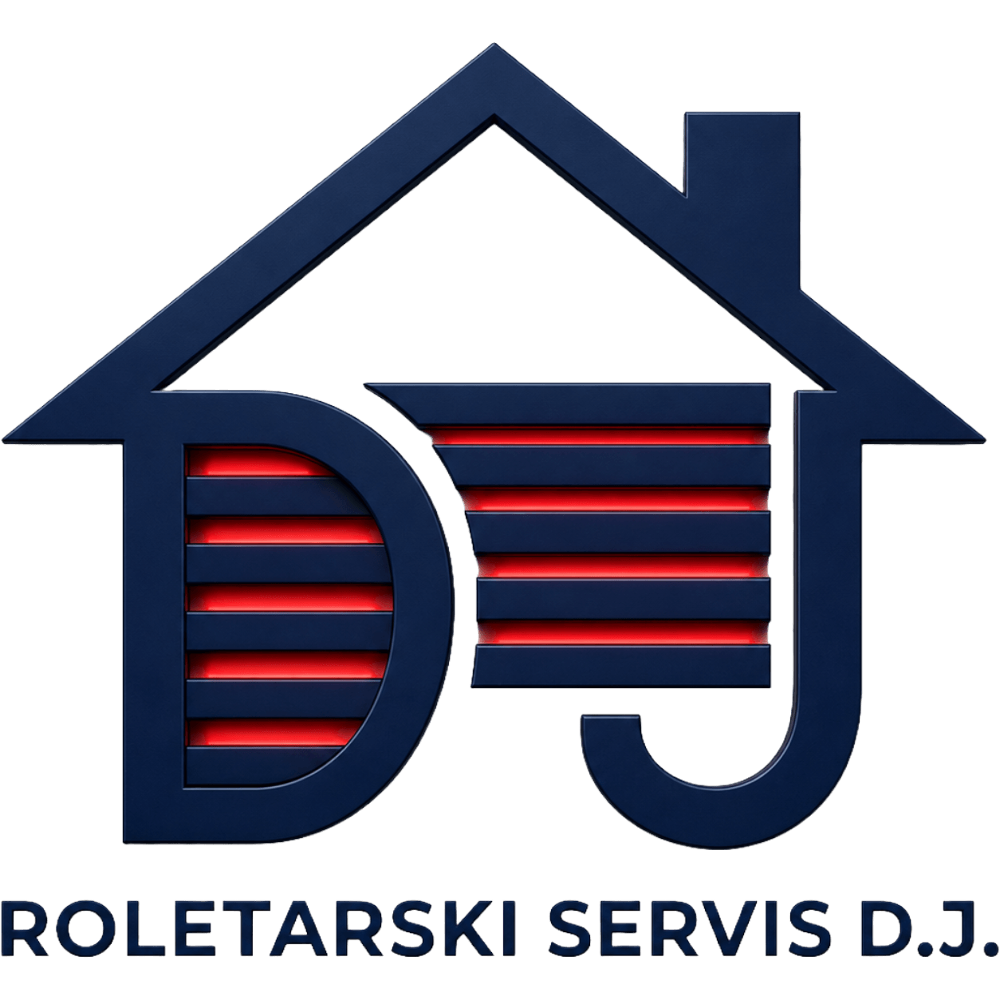
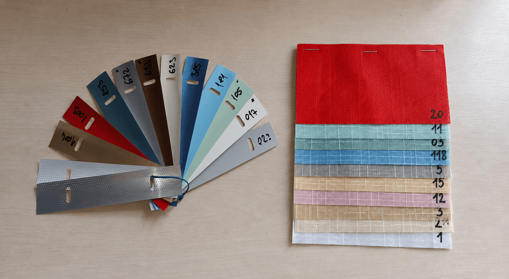
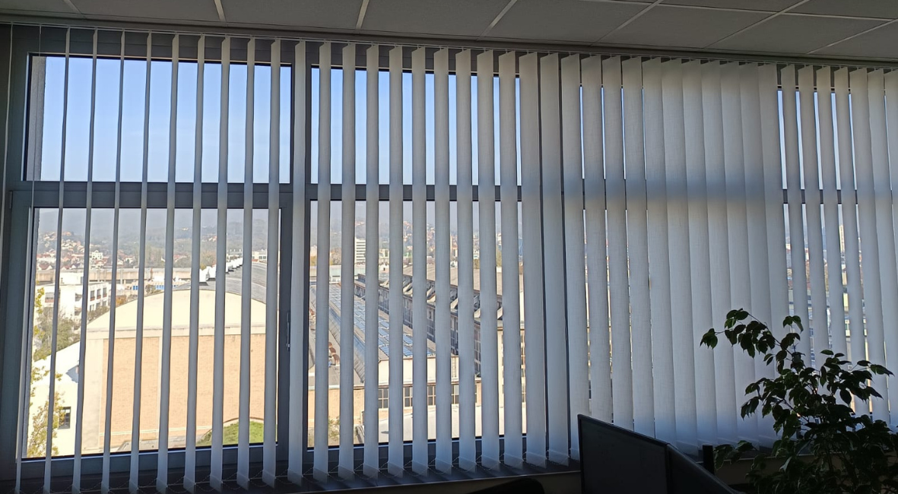
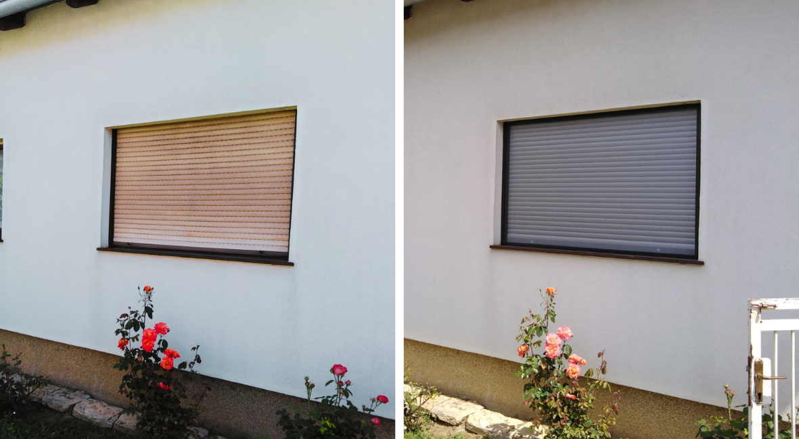
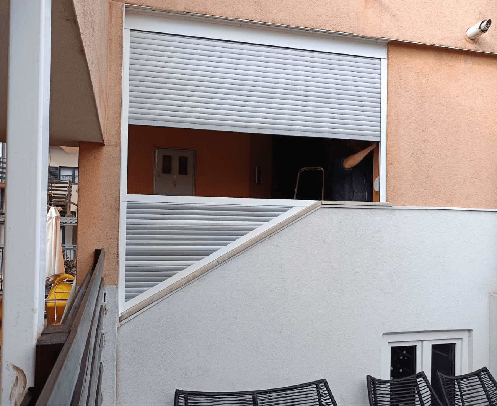
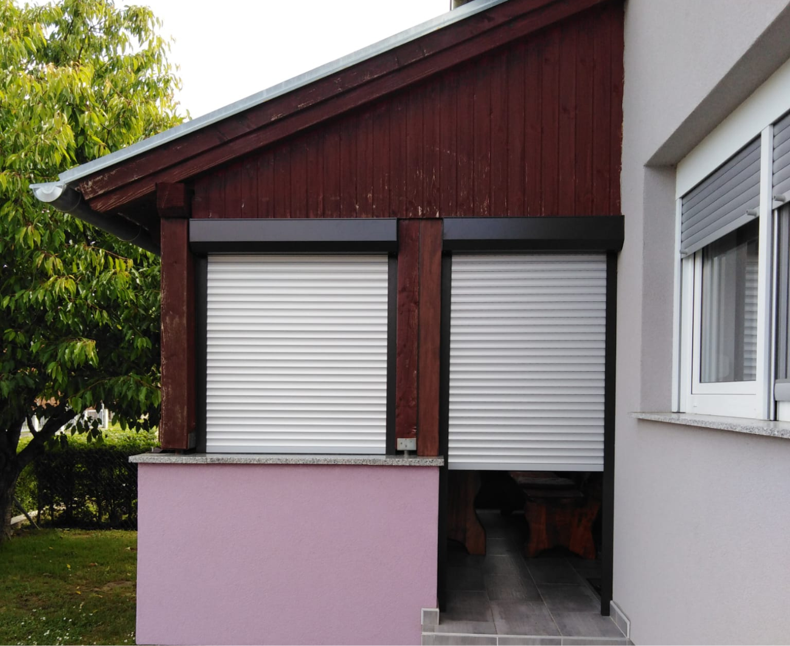
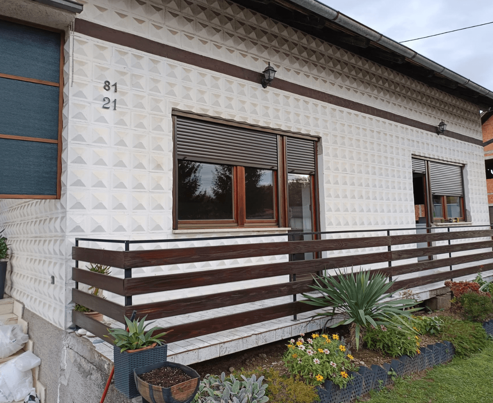
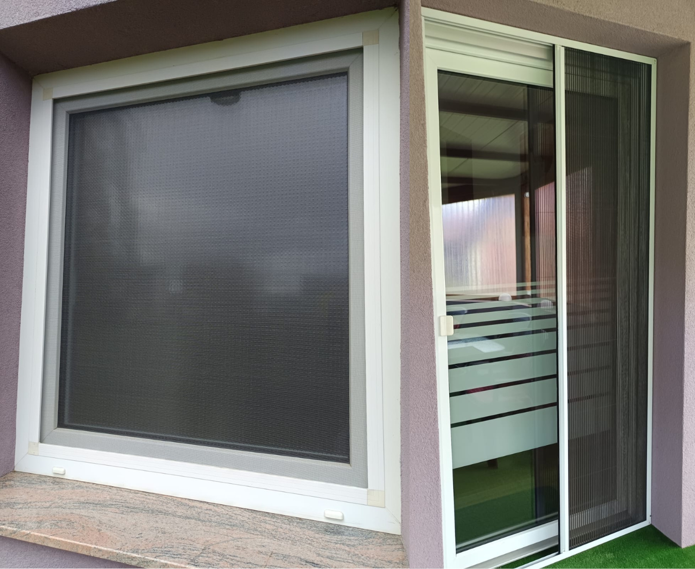

Popravak i ugradnja roleta i komarnika u Sisku, Petrinji i okolici
Trebate profesionalan popravak ili ugradnju roleta, komarnika po mjeri, alu žaluzina (venecijanera) ili elegantnih trakastih zavjesa? Roletarski servis D.J. osigurava brze, pouzdane i pristupačne usluge. Naš brzi izlazak na teren jamči servis roleta i rješavanje kvarova isti dan.
Pokvarila vam se roleta, puknula je gurtna, smeta vam sunčeva svjetlost ili tražite spas od ljetnih vrućina? Napadaju vas dosadne bube i insekti pa se ne možete opustiti u vlastitom domu? Rolo ili fiksne mrežice rješavaju problem dosadnih komaraca, muha i ostalih letećih nametnika jednom zauvijek.
Obratite nam se s punim povjerenjem. Naš obrt sa sjedištem u mjestu Mošćenica nadomak Petrinje i Siska uspješno vrši servis i popravak svih vrsta roleta, zatvaranje balkona i terasa PVC ili ALU lamelama, preciznu izmjeru te ugradnju potpuno novih roleta (unutarnja ili vanjska kutija). Nudimo i kvalitetne mrežice protiv kukaca, komarnike za prozore i vrata, unutarnje aluminijske žaluzine te trakaste zavjese za domove i poslovne prostore.
Za besplatne konzultacije, informativnu cijenu i dogovor termina nazovite nas pouzdano na telefon!
Zašto odabrati Roletarski servis D.J.?
Bilo da je u pitanju ugradnja sjenila na novu stolariju ili hitna zamjena automata i gurtne u Petrinji i Sisku, garantiramo vrhunski materijal, pedantnu izvedbu i dolazak u najkraćem roku.
Bogato iskustvo
Dugogodišnje iskustvo i tehnička stručnost u svim vrstama popravaka i ugradnji roleta i komarnika.
90% popravaka odmah
Najčešće kvarove na mehanizmima i roletama uspješno rješavamo odmah pri prvom izlasku na teren.
Preko osiguranja
Nudimo usluge servisa, popravaka i zamjene roleta uz dokumentaciju za naplatu preko osiguranja.
Naše Usluge i Proizvodi

Ugradnja na postojeću stolariju
Profesionalna ugradnja i prilagodba roleta na vaše postojeće prozore i vrata:
- Plastične PVC rolete – ekonomska pristupačnost u 7 modernih boja
- Aluminijske rolete s izolacijom – punjene poliuretanom, 12 boja
- Rolete s vanjskom kutijom – idealno za ugradnju na već montirane prozore
- Zatvaranje balkona s roletama – toplinska i zvučna zaštita prostora

Zaštita od sunca i kukaca
Moderna rješenja za regulaciju svjetlosti i obranu od komaraca:
- Trakaste zavjese – elegantno i praktično rješenje u 15 različitih boja
- Aluminijske žaluzine (venecijaneri) – potpuna kontrola privatnosti
- Mreže protiv kukaca (komarnici) – rolo, fiksni i plise komarnici po mjeri

Popravci i kućne intervencije
Brzo rješavanje kvarova na roletama i ostali sitni popravci u kućanstvu:
- Servis i popravak starih roleta – zamjena pokidanih gurtni, traka i automata
- Kućni popravci – montaža rasvjete, lustera, zamjena prekidača i utičnica
Naš roletarski servis koristi isključivo provjerene i dugotrajne materijale za PVC rolete i aluminijske rolete s vrhunskom izolacijom. Redovito servisiranje i pravovremena zamjena gurtne ili automata sprječava veća oštećenja na mehanizmu rolete. Komarnici po mjeri idealan su odabir za mirno ljeto bez nametnika, a ugrađujemo ih brzo i pedantno na sve tipove prozorskih okvira.
Područje rada i dostupnost
Glavno sjedište našeg obrta nalazi se u Mošćenici, a usluge izmjere, ugradnje i popravaka redovito vršimo na području dvije županije.
Dolazimo na Vašu lokaciju:
CIJELA SISAČKO-MOSLAVAČKA ŽUPANIJA
(Sisak, Petrinja, Mošćenica, Kutina, Glina, Popovača, Lekenik, Sunja...)
CIJELA ZAGREBAČKA ŽUPANIJA
(Velika Gorica, Ivanić-Grad, Dugo Selo, Samobor, Zaprešić, Jastrebarsko...)
Obratite nam se s povjerenjem – izlazak na teren i brza ugradnja osigurani su na cijelom navedenom području!
Galerija naših radova




Recenzije naših klijenata
Ostavite Vašu recenziju
Česta pitanja o našim uslugama
Koliko košta popravak rolete i zamjena gurtne?
Cijena servisa ovisi o točnom kvaru (puknuta traka/gurtna, neispravan automat, zaglavljene lamele). Većinu uobičajenih popravaka rješavamo brzo, a točan trošak definiramo prije samog izvođenja rada.
Dolazite li na popravak roleta isti dan?
Za sve klijente na području Siska, Petrinje i bliže okolice nastojimo organizirati dolazak i popravak unutar istog dana od Vašeg poziva, ovisno o popunjenosti naših dnevnih kapaciteta.
Ugrađujete li komarnike na postojeće prozore?
Da. Izrađujemo i ugrađujemo rolo, fiksne i plise komarnike po mjeri za sve vrste već montirane stolarije (drvo, PVC ili aluminij), čime osiguravamo trajnu zaštitu od kukaca.
Nudite li popravak roleta preko stambenog osiguranja?
Da, sve popravke nastale uslijed oštećenja ili nepogoda možemo odraditi uz izdavanje računa i potrebne prateće dokumentacije kako biste jednostavno izvršili povrat sredstava preko osiguravajuće kuće.
Kontakt i informacije
Kontakt podaci
Radno vrijeme
- Ponedjeljak - Petak 08 - 16 h
- Vikend Zatvoreno